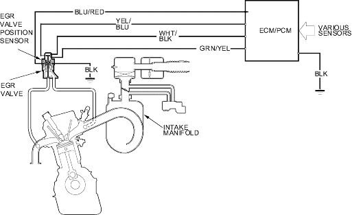

Fuel and Emissions Systems
|
11-191 |
Exhaust Gas Recirculation (EGR) System Diagram
The EGR system reduces oxides of nitrogen (NOx) emissions by recirculating exhaust gas through the EGR valve and the intake manifold into the combustion chambers. The ECM/PCM memory includes the ideal EGR valve position for varying operating conditions.
The EGR valve position sensor detects the amount of EGR valve lift and sends it to the ECM/PCM. The ECM/PCM then compares it with the ideal lift in its memory (based on signals sent from other sensors). If there is any difference between the two, the ECM/PCM cuts current to the EGR valve.
